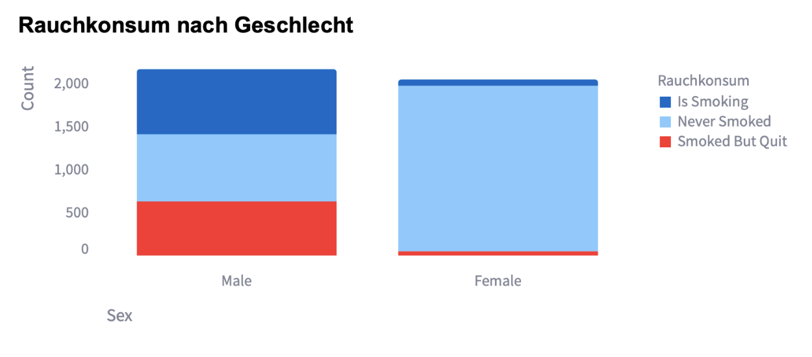
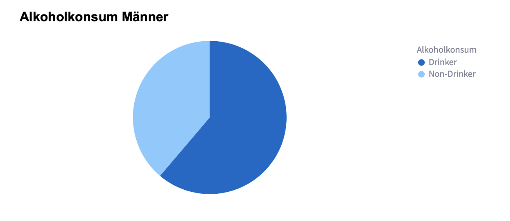
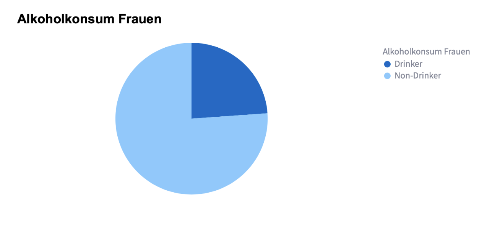
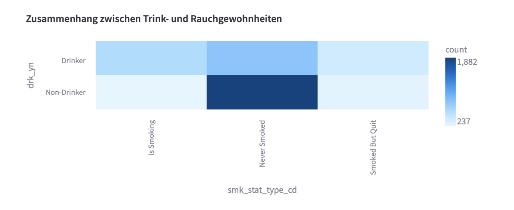
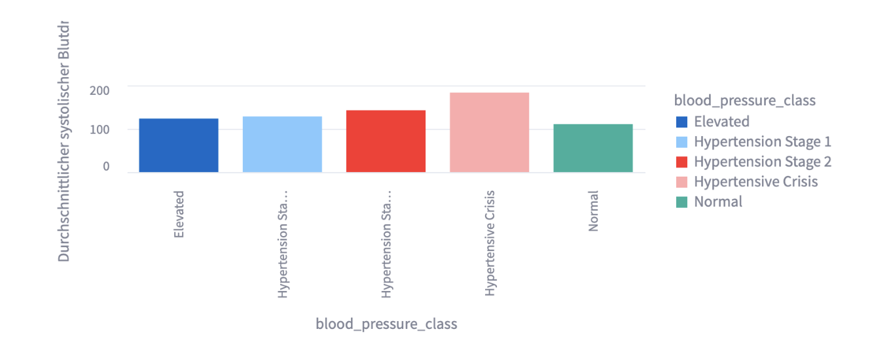
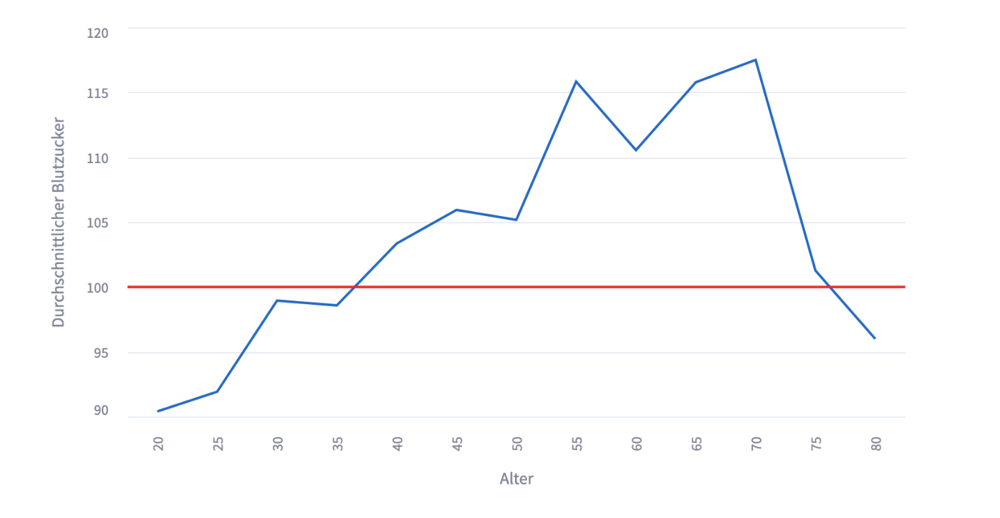
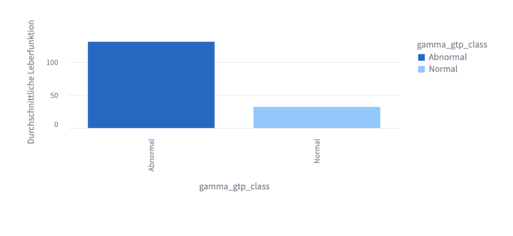

Gesundheitsrisiken von Alkohol und Rauchen
0.7 Rauchgewohnheiten
Um einen ersten Überblick des Datensatzes zu bekommen, was die Rauchgewohnheiten angeht habe ich ein Balkendiagramm erstellt. Dieses ist unter den Geschlechtern aufgeteilt und zeigt die Häufigkeit der jeweiligen Merkmalsausprägungen. Zuerst zeige ich den code den ich dazu geschrieben habe und anschließend das Diagramm was hierbei herauskam:
<code>
chart = alt.Chart(df).mark_bar(
cornerRadiusTopLeft=3,
cornerRadiusTopRight=3
).encode(
x=alt.X('sex:O', sort='-y', axis=alt.Axis(title="Sex", titleAnchor="start", labelAngle=0)),
y=alt.Y('count():Q', axis=alt.Axis(title="Count", titleAnchor="end", grid=False)),
color=alt.Color('smk_stat_type_cd:N', legend=alt.Legend(title="Rauchkonsum"))
).properties(
title='Rauchkonsum nach Geschlecht',
width=400,
height=300
).configure_title(
fontSize=20,
font='Arial',
anchor='start',
color='black'
).configure_axis(
labelFontSize=14,
titleFontSize=16
).configure_view(strokeWidth=0)
chart
</code>
Zu erkennen in diesem Diagramm ist, das bei den Männern die Ausprägungen relativ gleichverteilt sind. Jedoch bei den Frauen die Mehrheit noch nie geraucht hat.
0.8 Alkoholkonsum
Um genauso einen besseren Einblick in die Gewohnheiten zu bekommen was den Alkohol betrifft, habe ich zwei Pie Charts erstellt jeweils eins für die Geschlechter. Hier bin ich so vorgegangen das ich das DataFrame gefiltert habe je nach dem Geschlecht und es dann in einem PieChart abbilde bezogen auf den Alkoholkonsum.
<code>
#Alkoholkonsum Männer
df_male = df[df['sex'] == 'Male']
chart = alt.Chart(df_male).mark_arc().encode(
theta='count()',
color=alt.Color('drk_yn:N', legend=alt.Legend(title="Alkoholkonsum"))
).properties(
title='Alkoholkonsum Männer',
width=400,
height=300
).configure_title(
fontSize=20,
font='Arial',
anchor='start',
color='black'
).configure_axis(
labelFontSize=14,
titleFontSize=16
).configure_view(strokeWidth=0)
chart
#Alkoholkonsum Frauen
df_female = df[df['sex'] == 'Female']
chart = alt.Chart(df_female).mark_arc().encode(
theta='count()',
color=alt.Color('drk_yn:N', legend=alt.Legend(title="Alkoholkonsum Frauen"))
).properties(
title='Alkoholkonsum Frauen',
width=400,
height=300
).configure_title(
fontSize=20,
font='Arial',
anchor='start',
color='black'
).configure_axis(
labelFontSize=14,
titleFontSize=16
).configure_view(strokeWidth=0)
chart
</code> 
Daraus konnte ich dann erkennen, das auch hier der Konsum der Männer höher als der der Frauen ist, jedoch nicht ganz so einprägend wie bei dem Rauchkonsum.
0.9 Zusammenhänge
Um die Zusammenhänge der beiden Konsume festzustellen habe ich eine Heatmap erstellt. Hier wollte ich erfahren ob ein Konsum einen Einfluss auf den anderen hat.

In der Heatmap ist zu deuten, dass es einen starken Zusammenhang gibt zwischen den Ausprägungen nicht rauchen und keinen Alkohol konsumieren. Das bedeutet das es wahrscheinlich ist dass wenn eine Person in der Studie noch nie geraucht hat sie größtenteils auch keinen Alkohol trinkt.
Es ist noch ein geringer Zusammenhang zu erkennen zwischen noch nie geraucht aber Alkoholkonsument. Daraus kann man schließen das es wahrscheinlicher ist das jemand Alkohol trinkt auch wenn noch nie graucht worden ist.
0.10 Bludruck
Der Blutdruck ist einer vieler gesundheitlicher Merkmale die von den Gewohnheiten beeinflusst werden können, deshalb habe ich mich für ihn innerhalb dieser Studie interessiert. Vorab habe ich ja die neue Klasse erstellt so kann es in fünf verschiedene eingeteilt werden von Normal bis Hypertensive Krise. Vorab habe ich den Datensatz gefiltert damit nur noch die Personen in betracht gezogen werden die beide Gewohnheiten umsetzte.
<code>
# DataFrame filtern
filtered_df = df[(df['drk_yn'] == 'Drinker') & (df['smk_stat_type_cd'] == 'Is Smoking')]
average_blood_pressure = filtered_df.groupby('blood_pressure_class').agg({
'sbp': 'mean',
'dbp': 'mean'
}).reset_index()
# Erstellen Sie das Balkendiagramm
chart_average_blood_pressure = alt.Chart(average_blood_pressure).mark_bar().encode(
x='blood_pressure_class:N',
y=alt.Y('mean(sbp):Q', title='Durchschnittlicher systolischer Blutdruck'),
color='blood_pressure_class:N'
).properties(
title='Durchschnittlicher Blutdruck',
width=500,
height=300
)
chart_average_blood_pressure
</code>
In dieser Abbildung ist zu erkennen, dass die Blutdruck Klasse Hypertensive Krise am ausgeprägtesten ist und der Normale Blutdruck am geringsten und Personen die rauchen und Alkohol konsumieren. Unterhalb werden nochmal die Klassen genauer beschrieben:
Normal: sbp < 120 and dbp < 80
Elevated: sbp < 130 and dbp < 80
Hypertension Stage 1: sbp < 140 and dbp < 90
Hypertension Stage 2: sbp < 180 and dbp < 120
Hypertensive Crisis: alles darüber0.11 Blutzucker
Da der Blutzucker ein Indiz für Diabetes sein kann und dieser auch stark von dem Konsum von Zigaretten oder Alkohol beeinflusst werden kann, habe ich mich dafür interessiert wie er sich über die Lebensjahre entwickelt von Personen die beides zu tun Pflegen. Deshalb entschied ich mich für ein Line Chart, indem in dann mit einer Linie kennzeichne wo der normale Blutzuckerspiegel liegen sollte.
<code>
# Durchschnittlichen Blutdzucker pro Alter berechnen
average_blds = filtered_df.groupby("age")["blds"].mean().reset_index()
# Line Chart erstellen
line_chart = alt.Chart(average_blds).mark_line().encode(
x=alt.X("age:O", title="Alter"),
y=alt.Y("blds:Q",
title="Durchschnittlicher Blutzucker",
scale=alt.Scale(domain=[90, 120])
),
tooltip=["age:O", "blds:Q"],
).properties(width=700, height=400)
# Horizontale Linie bei y-Wert 100 hinzufügen
rule_line = alt.Chart(pd.DataFrame({'y': [100]})).mark_rule(color='red', strokeWidth=2).encode(y='y:Q')
# Diagramm anzeigen
line_chart + rule_line
</code>
Unterhalb der Roten Linie zeigt sich ein Blutzucker der sich im gesunden Bereich befindet. Ab dem 40 Lebensjahr sieht man einen deutlichen Anstieg des Durchschnittlichen Spiegels.
0.12 Leberfunktion
Ein weiteres gesundheitliches Merkmal für dessen Auswirkung von Alokol und den Konsum von Zigaretten ich mich interessiert habe ist der der Leberfunktion. in dem DataFrame gibt die Spalte gamma_gtp_class die ich erstellt habe an ob die Funktion der Gallenwege Normal oder Abnormal ist. Auch hier betrachte ich Personen die beide Gewohnheiten umsetzten um das größte Ausmaß sehen zu können. Dies wollte ich anhand eines Balkendiagramms verdeutlichen:
<code>
average_gamma_gtp = filtered_df.groupby('gamma_gtp_class').agg({
'gamma_gtp': 'mean'
}).reset_index()
# Erstellen Sie das Balkendiagramm für den durchschnittlichen Leberfunktion
chart_average_blood_glucose = alt.Chart(average_gamma_gtp).mark_bar().encode(
x='gamma_gtp_class:N',
y=alt.Y('mean(gamma_gtp):Q', title='Durchschnittliche Leberfunktion'),
color='gamma_gtp_class:N'
).properties(
title='Durchschnittliche Leberfunktion',
width=400,
height=300
)
chart_average_blood_glucose
</code>
Hier ist die Auswikungen der beiden Konsume auch deutlich zu erkennen, die Merheit liegt im Abnormalen Bereich. Das bedeutet das bei den meisten Personen die Leberfunktion nicht ausreichend genug ist beziehungsweise stark beeinträchtigt.